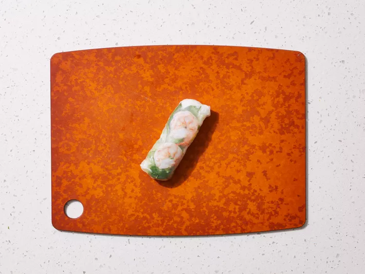

Vietnamese Fresh Spring Rolls
Easy recipe to make authentic spring rolls with fresh
ingridients and all the traditional Vietnamese flavor!
Try it out now! Check this recipe by clicking it's name or click here.

Easy recipe to make authentic spring rolls with fresh
ingridients and all the traditional Vietnamese flavor!
Try it out now! Check this recipe by clicking it's name or click here.

This poke is easy to make! The recipe is very flexible,
so you'll be able to use your favorite toppings to enjoy
and custom this bowl.
Cheaper to do than to buy in a restaurant!
And made for you, by you!
Try it out now! Check this recipe by clicking it's name or click here.
The perfect drink for warm days! Sweet and tropical,
with a mix of refreshing flavors that come together
into this fun mocktail free of alcohol.
This drink has electrolytes and helps with hydration,
while the cherry adds inmense flavor and antioxidants.
Try it out now! Check this recipe by clicking it's name or click here.